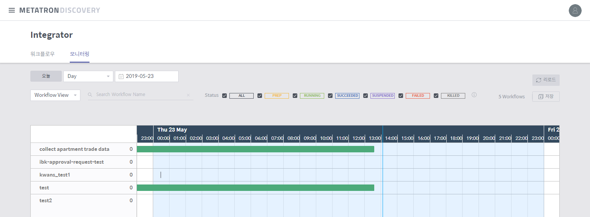

모니터링¶
Integrator 메인 홈에서 모니터링 탭으로 들어가면 등록된 각 워크플로우의 시간대별 실행 현황과 예약 정보를 그래프 형식으로 보여줍니다.

그래프에 표시된 상태 바 각각은 예약 또는 직접 명령한 워크플로우 실행 건을 가리키며, 다음과 같은 방식으로 실행 정보를 보여줍니다.
위치와 길이: 해당 건이 실행된 기간에 해당하는 타임라인 구간에 표시됩니다.
색상: 화면 상단에 범례로 표시된 Status 항목의 표시 색상과 동일한 색상으로 표시됩니다. 예를 들어 녹색으로 표시된 상태 바는 해당 실행 건이 running 상태임을 의미합니다.
상태 바 위에 마우스 커서를 오버하면 아래와 같은 실행 내역이 나타나며, 대화 상자 우측 상단의 상세보기를 클릭하면 자세한 정보를 확인할 수 있습니다.